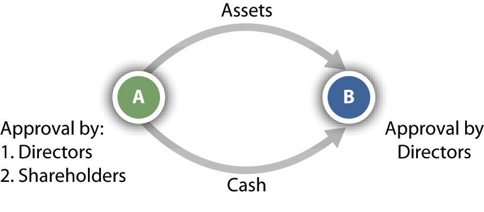
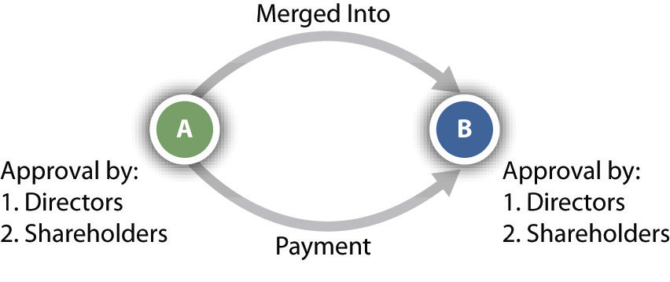
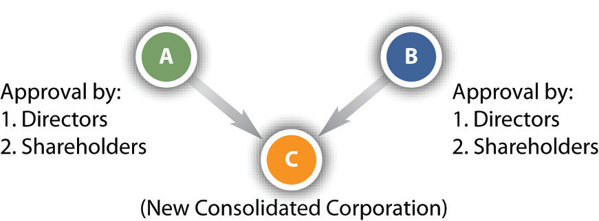

In popular usage, “mergerAny type of corporate expansion by which one corporation acquires part or all of another corporation.” often is used to mean any type of expansion by which one corporation acquires part or all of another corporation. But in legal terms, merger is only one of four methods of achieving expansion other than by internal growth.
One method of corporate expansion is the purchase of assetsOne corporation purchases the assets of another corporation in order to expand. of another corporation. At the most basic level, ABC Corporation wishes to expand, and the assets of XYZ Corporation are attractive to ABC. So ABC purchases the assets of XYZ, resulting in the expansion of ABC. After the purchase, XYZ may remain in corporate form or may cease to exist, depending on how many of its assets were purchased by ABC.
There are several advantages to an asset purchase, most notably, that the acquiring corporation can pick what assets and liabilities (with certain limitations, discussed further on in this section) it wishes to acquire. Furthermore, certain transactions may avoid a shareholder vote. If the selling corporation does not sell substantially all of its assets, then its shareholders may not get a vote to approve the sale.
For example, after several years of successful merchandising, a corporation formed by Bob, Carol, and Ted (BCT Bookstore, Inc.) has opened three branch stores around town and discovered its transportation costs mounting. Inventory arrives in trucks operated by the Flying Truckman Co., Inc. The BCT corporation concludes that the economics of delivery do not warrant purchasing a single truck dedicated to hauling books for its four stores alone. Then Bob learns that the owners of Flying Truckman might be willing to part with their company because it has not been earning money lately. If BCT could reorganize Flying Truckman’s other routes, it could reduce its own shipping costs while making a profit on other lines of business.
Under the circumstances, the simplest and safest way to acquire Flying Truckman is by purchasing its assets. That way BCT would own the trucks and whatever routes it chooses, without taking upon itself the stigma of the association. It could drop the name Flying Truckman.
In most states, the board of directors of both the seller and the buyer must approve a transfer of assets. Shareholders of the selling corporation must also consent by majority vote, but shareholders of the acquiring company need not be consulted, so Teds opposition can be effectively mooted; see Figure 29.1 "Purchase of Assets". (When inventory is sold in bulk, the acquiring company must also comply with the law governing bulk transfers.) By purchasing the assetstrucks, truck routes, and the trademark Flying Truckman (to prevent anyone else from using it)the acquiring corporation can carry on the functions of the acquired company without carrying on its business as such.For a discussion of asset purchases see Airborne Health v. Squid Soap, 984 A.2d 126 (Del. 2010).
Figure 29.1 Purchase of Assets
One of the principal advantages of this method of expansion is that the acquiring company generally is not liable for the debts and/or lawsuits of the corporation whose assets it purchased, generally known as successor liabilityThe liability of an acquiring company for the debts and/or lawsuits of the corporation whose assets it purchased.. Suppose BCT paid Flying Truckman $250,000 for its trucks, routes, and name. With that cash, Flying Truckman paid off several of its creditors. Its shareholders then voted to dissolve the corporation, leaving one creditor unsatisfied. The creditor can no longer sue Flying Truckman since it does not exist. So he sues BCT. Unless certain circumstances exist, as discussed in Ray v. Alad Corporation (see Section 29.4.1 "Successor Liability"), BCT is not liable for Flying Truckman’s debts.
Several states, although not a majority, have adopted the Ray product-line exception approach to successor liability. The general rule is that the purchasing corporation does not take the liabilities of the acquired corporation. Several exceptions exist, as described in Ray, the principal exception being the product-line approach. This minority exception has been further limited in several jurisdictions by applying it solely to cases involving products liability. Other jurisdictions also permit a continuity-of-enterprise exception, whereby the court examines how closely the acquiring corporation’s business is to the acquired corporation’s business (e.g., see Turner v. Bituminous Casualty Co.).Turner v. Bituminous Casualty Co., 244 N.W.2d 873 (Mich. 1976).
When the assets of a company are purchased, the selling company itself may or may not go out of existence. By contrast, in a merger, the acquired company goes out of existence by being absorbed into the acquiring company. In the example in Section 29.1.2 "Merger", Flying Truck would merge into BCT, resulting in Flying Truckman losing its existence. The acquiring company receives all of the acquired company’s assets, including physical property and intangible property such as contracts and goodwill. The acquiring company also assumes all debts of the acquired company.
A merger begins when two or more corporations negotiate an agreement outlining the specifics of a merger, such as which corporation survives and the identities of management personnel. There are two main types of merger: a cash merger and a noncash merger. In a cash merger, the shareholders of the disappearing corporation surrender their shares for cash. These shareholders retain no interest in the surviving corporation, having been bought out. This is often called a freeze-out merger, since the shareholders of the disappearing corporation are frozen out of an interest in the surviving corporation.
In a noncash merger, the shareholders of the disappearing corporation retain an interest in the surviving corporation. The shareholders of the disappearing corporation trade their shares for shares in the surviving corporation; thus they retain an interest in the surviving corporation when they become shareholders of that surviving corporation.
Unless the articles of incorporation state otherwise, majority approval of the merger by both boards of directors and both sets of shareholders is necessary (see Figure 29.2 "Merger"). The shareholder majority must be of the total shares eligible to vote, not merely of the total actually represented at the special meeting called for the purpose of determining whether to merge.
Figure 29.2 Merger
ConsolidationA corporate expansion similar to a merger but resulting in an entity that is an entirely new corporation. is virtually the same as a merger. The companies merge, but the resulting entity is a new corporation. Returning to our previous example, BCT and Flying Truckman could consolidate and form a new corporation. As with mergers, the boards and shareholders must approve the consolidation by majority votes (see Figure 29.3 "Consolidation"). The resulting corporation becomes effective when the secretary of state issues a certificate of merger or incorporation.
Figure 29.3 Consolidation
For more information on mergers and consolidation under Delaware law, see Del. Code Ann., Title 8, Sections 251–267 (2011), at http://delcode.delaware.gov/title8/index.shtml#TopOfPage.
The fourth method of expanding, purchase of a company’s stock, is more complicated than the other methods. The takeover has become a popular method for gaining control because it does not require an affirmative vote by the target company’s board of directors. In a takeoverAn appeal directly to the shareholders of a target corporation by offering money or other securities in exchange for the shareholders’ shares., the acquiring company appeals directly to the target’s shareholders, offering either money or other securities, often at a premium over market value, in exchange for their shares. The acquiring company usually need not purchase 100 percent of the shares. Indeed, if the shares are numerous and widely enough dispersed, control can be achieved by acquiring less than half the outstanding stock. In our example, if Flying Truckman has shareholders, BCT would make an offer directly to those shareholders to acquire their shares.
In the case of closely held corporations, it is possible for a company bent on takeover to negotiate with each stockholder individually, making a direct offer to purchase his or her shares. That is impossible in the case of large publicly held companies since it is impracticable and/or too expensive to reach each individual shareholder. To reach all shareholders, the acquiring company must make a tender offer, which is a public offer to purchase shares. In fact, the tender offer is not really an offer at all in the technical sense; the tender offerAn invitation to the shareholders of a target corporation to tender their shares for a stipulated price. Often used when a target has many shareholders. is an invitation to shareholders to sell their shares at a stipulated price. The tender offer might express the price in cash or in shares of the acquiring company. Ordinarily, the offeror will want to purchase only a controlling interest, so it will limit the tender to a specified number of shares and reserve the right not to purchase any above that number. It will also condition the tender offer on receiving a minimum number of shares so that it need buy none if stockholders do not offer a threshold number of shares for purchase.
A tender offer or other asset purchase can be financed as a leveraged buyout (LBO)The acquisition of another company using a significant amount of borrowed money to pay for the acquisition. Often, the assets of the company being acquired may be used as collateral for the loans., a purchase financed by debt. A common type of LBO involves investors who are members of the target corporation and/or outsiders who wish to take over the target or retain a controlling interest. These purchasers use the assets of the target corporation, such as its real estate or a manufacturing plant, as security for a loan to purchase the target. The purchasers also use other types of debt, such as the issuance of bonds or a loan, to implement the LBO.
For more information about tender offers and mergers, see Unocal v. MesaUnocal Corp. v. Mesa Petroleum, 493 A.2d 946 (Del. 1985). and Revlon v. MacAndrews & Forbes.Revlon, Inc. v. MacAndrews & Forbes Holdings, Inc., 506 A.2d 173 (Del. 1985). The Wall Street Journal provides comprehensive coverage of tender offers, mergers, and LBOs, at http://www.wsj.com.
Under the federal Williams Act, upon commencement of a tender offer for more than 5 percent of the target’s stock, the offeror must file a statement with the Securities and Exchange Commission (SEC) stating the source of funds to be used in making the purchase, the purpose of the purchase, and the extent of its holdings in the target company. Even when a tender offer has not been made, the Williams Act requires any person who acquires more than 5 percent ownership of a corporation to file a statement with the SEC within ten days. The Williams Act, which made certain amendments to the Securities Exchange Act of 1934, can be viewed at http://taft.law.uc.edu/CCL/34Act/. The US Constitution is also implicated in the regulation of foreign corporations. The Commerce Clause of Article I, Section 8, of the Constitution provides that Congress has power “to regulate Commerce…among the several States.”
Because officers and directors of target companies have no legal say in whether stockholders will tender their shares, many states began, in the early 1970s, to enact takeover laws. The first generation of these laws acted as delaying devices by imposing lengthy waiting periods before a tender offer could be put into effect. Many of the laws expressly gave management of the target companies a right to a hearing, which could be dragged out for weeks or months, giving the target time to build up a defense. The political premise of the laws was the protection of incumbent managers from takeover by out-of-state corporations, although the “localness” of some managers was but a polite fiction. One such law was enacted in Illinois. It required notifying the Illinois secretary of state and the target corporation of the intent to make a tender offer twenty days prior to the offer. During that time, the corporation seeking to make the tender offer could not spread information about the offer. Finally, the secretary of state could delay the tender offer by ordering a hearing and could even deny the offer if it was deemed inequitable. In 1982, the Supreme Court, in Edgar v. Mite Corp., struck down the Illinois takeover law because it violated the Commerce Clause, which prohibits states from unduly burdening the flow of interstate commerce, and also was preempted by the Williams Act.Edgar v. Mite Corp., 457 U.S. 624 (1982).
Following the Mite decision, states began to enact a second generation of takeover laws. In 1987, in CTS Corporation v. Dynamics Corporation of America, the Supreme Court upheld an Indiana second-generation statute that prevents an offeror who has acquired 20 percent or more of a target’s stock from voting unless other shareholders (not including management) approve. The vote to approve can be delayed for up to fifty days from the date the offeror files a statement reporting the acquisition. The Court concluded that the Commerce Clause was not violated nor was the Williams Act, because the Indiana law, unlike the Illinois law in Mite, was consistent with the Williams Act, since it protects shareholders, does not unreasonably delay the tender offer, and does not discriminate against interstate commerce.CTS Corporation v. Dynamics Corporation of America, 481 U.S. 69 (1987).
Emboldened by the CTS decision, almost half the states have adopted a third-generation law that requires a bidder to wait several years before merging with the target company unless the target’s board agrees in advance to the merger. Because in many cases a merger is the reason for the bid, these laws are especially powerful. In 1989, the Seventh Circuit Court of Appeals upheld Wisconsin’s third-generation law, saying that it did not violate the Commerce Clause and that it was not preempted by the Williams Act. The Supreme Court decided not to review the decision.Amanda Acquisition Corp. v. Universal Foods Corp., 877 F.2d 496 (7th Cir. 1989).
If one company acquires 90 percent or more of the stock of another company, it can merge with the target company through the so-called short-form mergerIf the one company acquires 90 percent or more of the stock of another company, it can initiate a merger without the consent of the shareholders.. Only the parent company’s board of directors need approve the merger; consent of the shareholders of either company is unnecessary.
If a shareholder has the right to vote on a corporate plan to merge, consolidate, or sell all or substantially all of its assets, that shareholder has the right to dissent and invoke appraisal rightsIf a shareholder has the right to vote on a corporate plan to merge, consolidate, or sell all or substantially all of its assets, that shareholder has the right to dissent and demand compensation.. Returning again to BCT, Bob and Carol, as shareholders, are anxious to acquire Flying Truckman, but Ted is not sure of the wisdom of doing that. Ted could invoke his appraisal rights to dissent from an expansion involving Flying Truckman. The law requires the shareholder to file with the corporation, before the vote, a notice of intention to demand the fair value of his shares. If the plan is approved and the shareholder does not vote in favor, the corporation must send a notice to the shareholder specifying procedures for obtaining payment, and the shareholder must demand payment within the time set in the notice, which cannot be less than thirty days. Fair value means the value of shares immediately before the effective date of the corporate action to which the shareholder has objected. Appreciation and depreciation in anticipation of the action are excluded, unless the exclusion is unfair.
If the shareholder and the company cannot agree on the fair value, the shareholder must file a petition requesting a court to determine the fair value. The method of determining fair value depends on the circumstances. When there is a public market for stock traded on an exchange, fair value is usually the price quoted on the exchange. In some circumstances, other factors, especially net asset value and investment value—for example, earnings potential—assume greater importance.
See Hariton v. Arco Electronics, Inc.Hariton v. Arco Electronics, Inc., 40 Del. Ch. 326; 182 A.2d 22 (Del. 1962). and M.P.M. Enterprises, Inc. v. GilbertM.P.M. Enterprises, Inc. v. Gilbert, 731 A.2d 790 (Del. 1999). for further discussion of appraisal rights and when they may be invoked.
There are four main methods of corporate expansion. The first involves the purchase of assets not in the ordinary course of business. Using this method, the purchase expands the corporation. The second and third methods, merger and consolidation, are very similar: two or more corporations combine. In a merger, one of the merging companies survives, and the other ceases to exist. In a consolidation, the merging corporations cease to exist when they combine to form a new corporation. The final method is a stock purchase, accomplished via a tender offer, takeover, or leveraged buyout. Federal and state regulations play a significant role in takeovers and tender offers, particularly the Williams Act. A shareholder who does not wish to participate in a stock sale may invoke his appraisal rights and demand cash compensation for his shares.